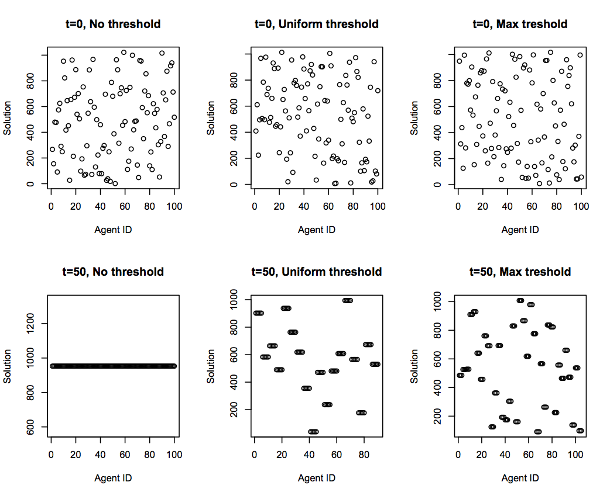
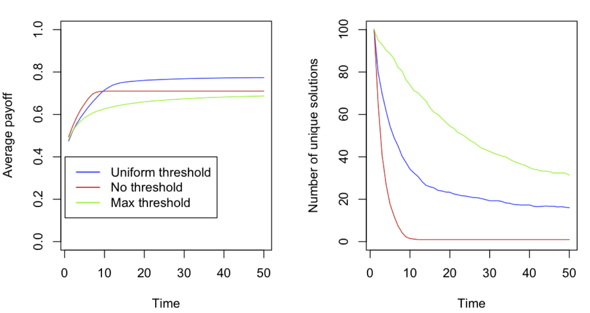

Organizing for solutions
Daniel Barkoczi and Abigail Sullivan
Our approach:
We considered a situation where a population of agents are trying to solve a problem (e.g., designing a piece of technology) by exploring a large space of possible solutions. Initially the agents start searching random areas of the problem space and,
therefore, do not exhibit any form of organization. We assume that agents are myopic and can search for better solutions that are close to their own solutions. In addition we assume that agents evaluate the solutions of others and depending on their
personal similarity threshold, relocate their search efforts to the area occupied by the other agent. Agents' personal similarity threshold captures individual differences in ability to evaluate solutions that are far
from one's own solution, or individual differences in risk preferences (i.e., willingness to try out something very different). Large thresholds capture high levels of risk taking, while low thresholds capture risk avoidance. In this model, depending on individual thresholds, over time agents will tend to form clusters and search the same area of the space in an organized fashion. We study how the distribution of thresholds in the population affects the rate at which the population tends to exhibit organization and how this affects population level performance.
Model specifications:
The agents (N = 100) search a landscape of solutions, where the landscape is defined by two parameters N and K. Each solution is an N digit string (N = 10) with binary values (2^N solutions). Each solution is associated with a unique payoff value.
In the NK model, K controls the complexity of the model via the number of interactions between the components (in our model, we let K = 5).
Figure 1 shows a stylized representation of the landscape which has several local optima in addition to a global optimum.

 Figure 1. - Stylized representation of a rugged problem space.
Figure 1. - Stylized representation of a rugged problem space.
Model procedures:
We begin by assigning each agent a randomly selected solution and a threshold value.
In different conditions we study three different threshold distributions: uniform (1 to 100%), no threshold (100%), and maximum threshold (0%).
Each agent then examines the solution of a randomly selected member of the population. Next, the agent compares the similarity of their own solution to the solution of the agent they examined. We define this in terms of percent difference. For example, consider the following four digit strings: 1101 and 1100. The last digit differs; thus, they have a 25 percent difference.
The agent then compares the similarity of the other agent's solution to their own similarity threshold.
If the similarity is greater than or equal to their threshold, they will select the other agent's solution and adopt if it has a
higher payoff than their current solution. If the solution does not reach their similarity threshold or if it has a lower payoff than their own solution, agents engage in local exploration around their current solution by local hill-climbing.
We repeat the process for 50 time steps and 10 replications.
Preliminary results:
1. Do individuals exhibit organization over time?
Figure 2 shows how agents are scattered on the space of possibilities at the start (t=0) and at the end (t=50) of the simulation.
Depending on the similarity threshold agents form either a single cluster converging on a unique solution (No threshold condition); relatively few clusters (Uniform threshold condition); or relatively large number of clusters (Max threshold).

 Figure 2. - Level of organization in the population at time t=0 and time t=50 for the three different threshold conditions.
Figure 2. - Level of organization in the population at time t=0 and time t=50 for the three different threshold conditions.
2. How do thresholds affect the rate of organization and performance?
Our results show that having a conservative threshold (Max threshold) and never switching to the solutions of other's results in poorest level of performance (Figure 3, Panel A) and the lowest level of organization (Panel B).
Having a very liberal threshold (No threshold) and always switching to the other agents solution whenever it is better performs better,
however, the population quickly gets stuck on several local optima.
Finally, having a uniform threshold forces the population to search for a longer time and ensures that the population converges on higher payoff peaks.
However, all three threshold distributions result in agents getting stuck on several optima.
The key insight is that having a uniform threshold in the population results in a specific balance between exploration and exploitation in the population that produces higher outcomes compared to having no threshold or a very conservative threshold.

 Figure 3. - Panel A: Average performance in the population over time. Panel B: Number of unique solutions in the population over time.
Figure 3. - Panel A: Average performance in the population over time. Panel B: Number of unique solutions in the population over time.
Future directions:
This model only considered two factors in an agent's decision to select a solution (their threshold and the payoff of the solution). In the future, it would be interesting to consider other factors that influence an agent's decision to select a solution. Other heterogeneous characteristics of agents that could influence their decisions include credibility or reputation of the solution, and agent values for things like innovation, etc.
Also, we only considered a scenario of an unstructured group, where agents are equally likely to sample each other. It would be pertinent to explore how agent organization and interaction in other types of networks changes their ability to reduce the number of possible solutions.
In addition, what is considered a good solution might not always be the one with the highest payoff. Other factors, such as whether a solution is an efficient one, a justifiable one or and innovative one might be equally important.
Other social science applications
This model could potentially be used to model innovation diffusion. Whether all individuals adopt a given technology in a specific time frame or how quickly agents converge to adoption of a single technology could be explored. Different types of social learning could also be implemented to provide insight into how individuals imitate (or not) the choices of other individuals.
The resource use of individuals could be modeled. For example, if each agent's "solution" represented an individual's extraction and usage of a given resource, how the system converges (or not) to a specific type of resource use over time could be explored. This scenario would likely benefit from adding other parameters to the model related agent learning and the declining availability of specific resources as they are extracted over time.
We also believe it would be interesting to model how a piece of information is spread overtime. In this case, we would alter the network structure
of the agents to explore how different networks impact the time it takes for agents to obtain a piece of information.
The fewer unique solutions in the model,
the more agents have the information. The threshold could represent the likelihood of an agent to believe the information they come in contact with (i.e. the perceived credibility of the agent they are interacting with).
Alternatively, it could represent the level of barriers that agents face in accessing the piece of information.
Although, not necessarily a social science application, another interesting scenario could involve modeling the exchange of genetic materials.